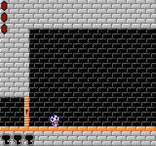
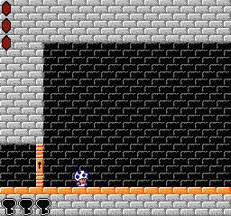
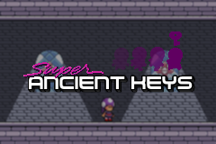
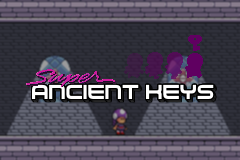

Games
A bunch of games and applications I've created.
Completed Games
Toad and the Ancient Keys

Released: February 21, 2016
A short metroidvania-style game where you play as a nameless toad attempting to circumvent the defenses of an ancient temple to recover a precious treasure.
-MFGG Page-
-GameJolt Page-

Released: February 21, 2016
A short metroidvania-style game where you play as a nameless toad attempting to circumvent the defenses of an ancient temple to recover a precious treasure.
-MFGG Page-
-GameJolt Page-
The Great Cursor Caper

Released: May 20, 2011
A short platformer where Mario is (slightly) controlled with the mouse.
-MFGG Page-
Released: May 20, 2011
A short platformer where Mario is (slightly) controlled with the mouse.
-MFGG Page-
WIP Games

Super Ancient Keys

A metroidvania title centering around thief and treasure hunter Shiff T. and her attempts to combat the ancient evil Omniform.
-GameJolt Page-

A metroidvania title centering around thief and treasure hunter Shiff T. and her attempts to combat the ancient evil Omniform.
-GameJolt Page-
Club Saturn: Desert Bus to Nowhere

Join a ragtag Discord group as they attempt to get delicious Krabby Patties in the Middle East, all while spreading the love of the Sega Saturn along the way.
Join a ragtag Discord group as they attempt to get delicious Krabby Patties in the Middle East, all while spreading the love of the Sega Saturn along the way.
The Super Mario Bros franchise and all characters contained within (such as toads) are copyright Nintendo. The Sega Saturn is copyright Sega, of course.